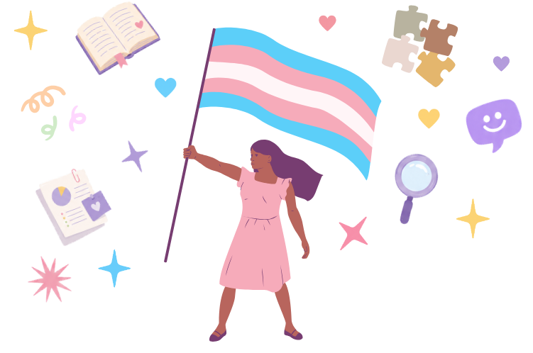
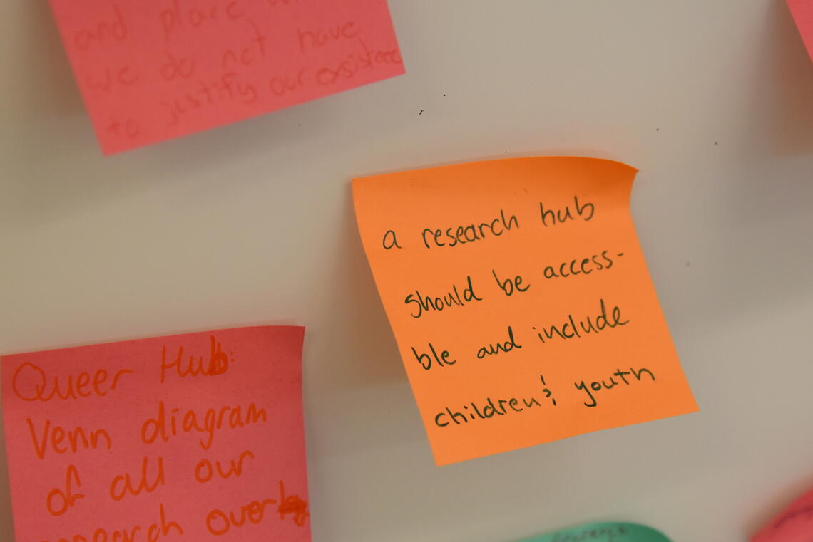

Elevate
Share and celebrate queer research.
A space to share ideas, highlight queer scholarship, and support projects that centre queer experiences across disciplines.

The Queer Research Network is an emerging initiative at the University of Calgary that brings together 2SLGBTQIA+ students, staff, faculty, and allies interested in research, collaboration, and community.
The hub centres queer experiences across disciplines, while creating space to share ideas, highlight queer scholarship, foster collaboration, and build visibility for queer research.
Share and celebrate queer research.
Build relationships with scholars across disciplines and lived experience.
Break out of silos to build transdisciplinary networks.
Queer and trans communities have long been the subjects of research, but the experiences and priorities have not always shaped the questions researchers ask (Marshall et al., 2019; Everhart et al., 2022). For us, queer research means being more intentional about whose questions we prioritize, whose knowledge we value, and how the work we support can better reflect the lives, strengths, and joy of queer communities (Everhart et al., 2022; Pang et al., 2026; Callaghan & van Leent, 2019). We want this space to celebrate that work and the people behind it!

Join talks, workshops, social gatherings, and events for queer research.
Join the mailing list for events, opportunities, research calls, and opportunites for collaboration. Make this so that it leads to the microsoft form